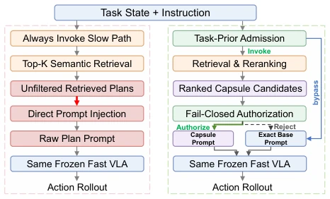
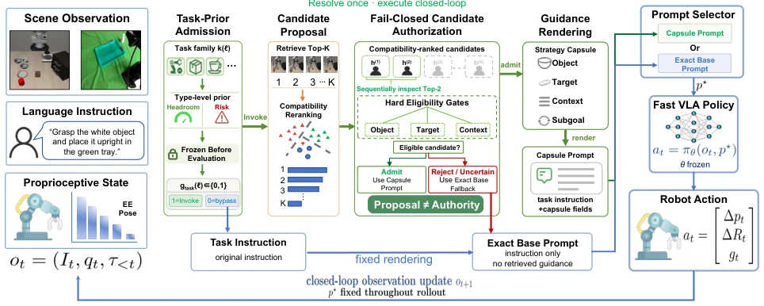
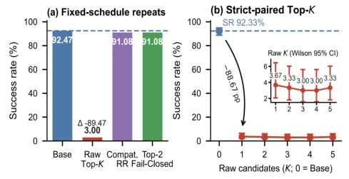
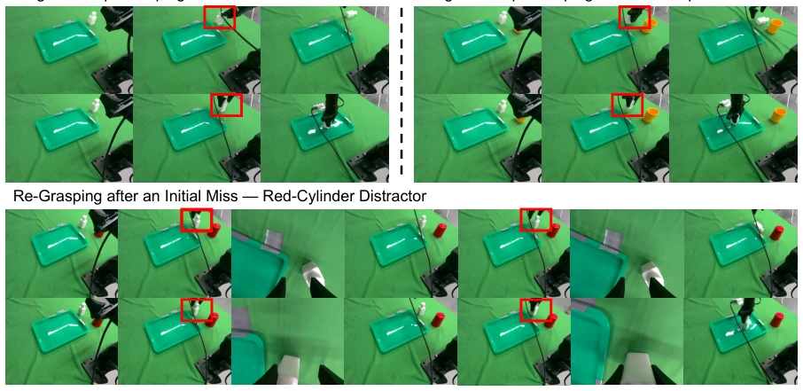

This paper pours cold water on "frozen strategy + retrieval augmentation", directly injecting retrieval text into the Prompt causes success rates to plummet from 92% to 3%, which is simply "prompt collapse". TOWN-VLA acts like a strict security guard, only allowing instructions conforming to the "standard capsule" format, otherwise directly reverting to Base Prompt. The highlight lies in revealing that "format is more fatal than semantics", proving the frozen strategy is extremely sensitive to instruction boundaries. However, the drawbacks are also obvious: relying on fixed compatibility rules, generalization to complex long-horizon tasks may be limited, and the physical experiment sample size is small; adaptive gating without Oracle is not yet fully solved, remaining a future challenge.
研究动机Motivation
现有工作如 SayCan (Ahn et al. 2022) 和 VoxPoser (Huang et al. 2023) 试图通过外部推理增强 VLA，但往往假设检索文本能无缝融入。本文指出，冻结策略（如 OpenVLA-OFT）对指令格式极度敏感，原始追加文本会破坏序列长度和 token 位置，导致“提示词形式崩塌”。现有规划器未分离候选质量与授权决策，导致无效干预。这不仅是性能问题，更是控制失效问题，需要新的接口契约。
Existing work such as SayCan (Ahn et al. 2022) and VoxPoser (Huang et al. 2023) attempts to enhance VLA through external reasoning, but often assumes retrieval text can integrate seamlessly. This paper points out that frozen strategies (such as OpenVLA-OFT) are extremely sensitive to instruction format; raw appended text will disrupt sequence length and token positions, leading to "prompt form collapse". Existing planners do not separate candidate quality from authorization decisions, leading to invalid interventions. This is not only a performance issue, but also a control failure issue, requiring a new interface contract.
TOWN-VLA constructs a "proposal ≠ authorization" interface, the core of which lies in separating candidate generation from policy authorization. The Pipeline is divided into: 1. Retrieve Top-K candidates, utilizing CLIP features and structured context; 2. Compatibility reranking, calculating scores based on CLIP similarity and object-goal structure overlap; 3. Top-2 fail-close cascade check, checking only the top two candidates. If candidates pass hard rules, render as standard capsule instructions; if failed, force revert to byte-level identical Base Prompt. The core innovation is the "exact recovery" mechanism, ensuring unauthorized paths do not pollute the frozen strategy, and supporting audit trails. Through fixed compatibility rules, decoupling of candidate generation and policy input is achieved, guaranteeing absolute freezing of policy parameters. Additionally, the interface records routing status and prompt hash, making execution trajectories auditable, solving the black-box problem of retrieval content directly polluting control input in traditional methods.

Figure 1: Prompt authority at the frozen-policy boundary. Direct injection passes retrieved text to the VLA; TOWN- VLA (Think Only When Needed) authorizes a canonical capsule or restores Base while retaining the same frozen action generator.

Figure 2: TOWN-VLA separates invocation, candidate ranking, prompt authorization, and frozen control. Ranked contexts are checked and either rendered as a canonical capsule or rejected for exact Base restoration. Logged scores, flags, and prompt hashes make routes auditable. Task-Prior is used only for the oracle control in Equation (9).
On LIBERO-Plus simulation, weighted success rate improved from 69.5% to 73.1%, with gains on all six perturbation axes. Physical PiPER robot arm experiments, success rate leaped from 52.7% to 78.7%, significantly improving grasp and placement stability. Ablation experiments show that reranking alone is insufficient, must be paired with fail-close mechanism to recover Base performance. Oracle routing can save 50% slow path calls, reducing latency. But adaptive gating without Oracle is not yet fully solved, remaining a future challenge. Experiments cover multiple perturbation axes, proving the interface's robustness. Additionally, verified the reliability of exact recovery through 1200 state audits, all unauthorized paths reverted to Base prompts, ensuring safety boundaries.

Figure 3: Prompt-form collapse and retrieval-depth diagnos- tics. (a) Mean SR over three fixed-schedule repeats on one manifest (1,200 episodes per method and repeat); the Raw annotation is its change from matched Base. Compat. RR and Top-2 denote the reranked capsule and fail-closed cascade. (b) Paired Top-K results on 300 states with Wilson 95% in- tervals.

Figure 4: Representative π0.5/PiPER rollouts in the three evaluated scenes. Columns are time ordered; rows compare Base and TOWN-VLA, and red boxes mark interaction regions. Prompts resolve once; results use all 150 trials per method.